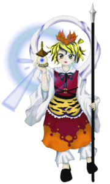
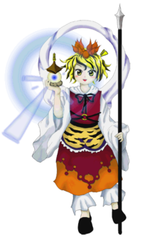

- Welcome to Touhou Wiki!
- Please register to edit. For assistance, check in with our Discord server or IRC channel.
Shou Toramaru
Shou Toramaru toɽamaɽɯ ɕoː (♫) Syou Toramaru | |
|---|---|
|
 Shou Toramaru in Undefined Fantastic Object Disciple of BishamontenMore Character Titles | |
| Species |
Youkai of stories about tigers, Avatar of Bishamonten |
| Abilities |
Gathering treasures |
| Age |
At least 1000 years |
| Occupation |
Disciple of Bishamonten |
| Location | |
Music Themes | |
| |
Appearances | |
| Official Games | |
| |
| Print Works | |
| |
Shou Toramaru (寅丸 星 Toramaru Shou) is a disciple of the god Bishamonten. Along with Minamitsu Murasa and the other youkai aboard the Palanquin Ship, she seeks to revive Byakuren Hijiri after she had been sealed away in Makai by humans.
General Information[edit]
Shou is a tiger youkai lives at the Myouren Temple as the avatar of Bishamonten. Technically, though she is Byakuren's disciple as a high-ranking priest, the fact that she is Bishamonten's avatar essentially means that she is worshiped by Byakuren. As she attracts wealth, she is one of the only things that draws any humans to the predominantly youkai-inhabited temple in the first place. It has been said that she resembles statues of Bishamonten, though she doesn't look like him at all.
Personality[edit]
In public, Shou remains gentle, composed, and dignified. However, when around closer friends, she has been known to show more emotion. She has apparently even flown into a rage a few times. She is also a heavy drinker, though the Buddhist faith prohibits that.
Ability[edit]
- Gathering treasures
Shou's ability allows her to gather treasures. After she has gathered precious gems, she can use their radiance in combination with the Jeweled Pagoda to fire lasers that can reduce anything to ashes. Moreover, if she fires those lasers at the ground, more gems will be created. Anyway, most of Shou's power comes from this pagoda alone, and she doesn't have much in the way of physical ability.
Occupation[edit]
Shou spends her time as a high-ranking priest at the Myouren Temple. Her actual duties are unknown, but as the avatar of Bishamonten, those at the temple worship her.
Possessions[edit]
Shou carries Bishamonten's Pagoda, which manifests her ability to bring about wealth. She also carries a long spear, but it's mostly for decorative purposes. She uses it to appear more dignified, and also as a walking stick.
Backstory[edit]
Shou was born as a "tiger youkai", not from an actual tiger (which are not native to Japan), but from the fear created by stories about tigers that had spread there. As such, her existence originally depended on the people of Japan remaining ignorant about what real tigers were like.
While Byakuren was still a famous monk in the outside world, she scouted Shou to become a disciple of the god Bishamonten (whom the monk currently worshipped) because she was a youkai, in order for Byakuren to gain the trust of the youkai living on the mountain. Shou, meanwhile, hid the fact that she was a youkai from humans. Bishamonten also assigned Shou a servant, a mouse youkai named Nazrin, not only to assist her but also to keep an eye on her. As the years passed, Shou proved herself a more-than-worthy disciple, and Nazrin's role solidified as her subject. Having a more solid identity as Bishamonten's avatar also prevented Shou from fading away.
After Byakuren was sealed away, Shou couldn't do much - if she had tried to do something, the fact that she was a youkai would have been revealed - so she continued serving Bishamonten. However, hundreds of years later, she, Murasa, Ichirin, and Nazrin appeared above-ground in Gensokyo, where they vowed to rescue Byakuren at all costs.
Character Design[edit]
Origin[edit]
Her appearance seems to be based upon that of Bishamonten, the Japanese Buddhist god based on the Indian God Vaisravana. Bishamonten is often depicted holding a spear and a small pagoda. This is derived from the fact that Chougosonshi Temple (朝護孫子寺), which keeps the e-maki of Myouren's tales (Shigisan Engi Emaki), enshrines Bishamonten. Originally the tiger had few symbolic ties to Bishamonten, but became more relevant in the Asuka period when the main Buddhist faction, Prince Shōtoku and the Soga clan, were able to subdue the anti-Buddhist Mononobe clan because Bishamonten appeared to support them on the hour of the tiger on the day of the tiger in the year of the tiger (寅の年、寅の日、寅の刻) of the Chinese zodiac. Now, many tigers can be seen at Chougosonshi Temple. Their website also shows how they raise them.
In addition to that, the tiger motif have been inspired by one of Vaisravana's frequent companions in artistic depictions and sutras, an unidentified man wearing a tiger skin. She may also have been inspired by his usual mount, a lion, but, as lions are only vaguley related to tigers, this seems unlikely.
Name[edit]
Her full name is Shou Toramaru (寅丸 星). Toramaru (寅丸) can be literally translated as "tiger circle". However, the word "maru" is also used to end the names of ships in Japan, which is fitting, considering one of the main aspects of Undefined Fantastic Object is the "treasure ship". tora (寅) can be used to refer the tiger as a sign in the Chinese Zodiac, which carries with it the additional meanings of a period of time from 3AM to 5AM, the direction East by Northeast, or January. Shou (星) means "star", which is also fitting considering the extraterrestrial implications given by the game's title.
{kind=link}
Shou's name was misspelled as "虎丸 星" in the music comments. This kanji can refer to tigers, felines of the "Panthera tigris" species, or colloquially, a "drunk person".
Design[edit]
Shou has orange-yellow hair with black stripes in it and golden yellow eyes. She wears a lotus-shaped ornament on her head, has a giant cloth circle attached to her back, and carries a giant spear in her left hand and the jeweled pagoda of Bishamonten in her right. She wears a burgundy/orange/white dress with a tiger pattern around the abdomen along with white, frilly pants under her dress and black shoes on her feet.
Story[edit]
- Undefined Fantastic Object
In Undefined Fantastic Object, she is a member of the group looking around for the two treasures needed in order to revive Byakuren: the fragments of the Flying Storage, and the pagoda of Bishamonten. She sends Nazrin to find the latter. After the palanquin ship enters Makai, she encounters the heroine; with the two needed treasures now together, she could proceed with Byakuren's revival. For one reason or another, however, she is attacked and beaten by the heroine, who then opts to unseal Byakuren either out of curiosity or real concern.
- Double Spoiler
In Double Spoiler, Shou appears on stage 7 as a target, where Aya Shameimaru and Hatate Himekaidou take photos of her and her spell card.
- Hopeless Masquerade
Shou made a background cameo appearance in Hopeless Masquerade on the Myouren Temple stage and Youkai Tanuki Forest stage. She is seen standing around.
Relationships[edit]
Shou is on good terms with Byakuren, and felt extremely bad that her role kept her from going to rescue the monk. After appearing in Gensokyo, she created a plan to unseal her. The two now share a complex relationship - Shou is Byakuren's disciple, but because she is Bishamonten's avatar, she's also worshiped by her.
Nazrin is essentially Shou's underling. The fact that they've been together for hundreds of years shows trust in her servant to not tell Murasa or Ichirin that she had lost the pagoda, which most likely would have been embarrassing, being the prodigious disciple of Bishamonten.
Spell Cards[edit]
| Name | Translated | Comments | Games | Stage | ||
|---|---|---|---|---|---|---|
| Total: 11 | ||||||
| 宝塔「レイディアントトレジャー」 | Jeweled Pagoda "Radiant Treasure" | UFO | St. 5: E/N | |||
| 宝塔「レイディアントトレジャーガン」 | Jeweled Pagoda "Radiant Treasure Gun" | UFO | St. 5: H/L | |||
| 光符「アブソリュートジャスティス」 | Light Sign "Absolute Justice" | UFO | St. 5: E/N | |||
| 光符「正義の威光」 | Light Sign "Aura of Justice" | UFO | St. 5: H/L | |||
| 法力「至宝の独鈷杵」 | Buddhist Power "Most Valuable Vajra" | UFO | St. 5: E/N | |||
| 法灯「隙間無い法の独鈷杵」 | Buddha's Light "Vajra of Perfect Buddhism" | UFO | St. 5: H/L | |||
| 光符「浄化の魔」 | Light Sign "Demon of Purification" | UFO | St. 5: E/N/H | |||
| 「コンプリートクラリフィケイション」 | "Complete Clarification" | UFO | St. 5: L | |||
| 寅符「ハングリータイガー」 | Tiger Sign "Hungry Tiger" | DS | St. 7 | |||
| 天符「焦土曼荼羅」 | Heaven Sign "Scorched Earth Mandala" | DS | St. 7 | |||
| 宝符「黄金の震眩」 | Treasure Sign "Dazzling Gold" | DS | St. 7 | |||
Additional Information[edit]
- Shou's ability is listed as "gathering treasures", but ironically she herself did not gather any of the needed treasure to unseal Byakuren; instead, Nazrin found the pagoda, and the heroine found the fragments of Flying Storage. The only real reference to this ability is in her final spell card in Double Spoiler.
- Shou also possesses a mandala, a symbolic object of Buddhism, according to Double Spoiler.
- In her official profile, as well as in her dialogue, Shou is characterized as very honest and straightforward.
Fandom[edit]
Official Profiles[edit]
|  | ○５面ボス 毘沙門天の弟子 寅丸 星（とらまる しょう） 種族：妖怪 縁起が良い妖怪。 白蓮は寺の近くに昔からいた妖怪達が、怯えている事に気付く。 毘沙門天は忙しくて寺に来られないし、妖怪達は怯えて近づかない。 そこで選ばれたのが星だった。 しかし、完全に信頼した訳ではなかった。 そんな毘沙門天の心配を余所に、彼女は何も問題を起こさなかった。 しかし、彼女は優秀すぎた。 白蓮がいなくなってから数百年経って、お寺は荒れに荒れた。 もう、後悔したくない。逃げやしない。 「封印を解く為には、白蓮の弟様、命蓮の力が必要です。 |
○Stage 5 Boss Disciple of Bishamonten Shou Toramaru Species: youkai A youkai representing good fortune. Byakuren realized that the youkai around the temple had always been afraid. Bishamonten was too busy to hang around the temple much, and the youkai were too scared to come around. That chosen youkai was Shou. However, she hadn't yet earned Bishamonten's full confidence. But, in spite of Bishamonten's worries, she didn't cause any problems at all. Still, she was perhaps too excellent. A few hundred years after Byakuren disappeared, the temple was in great disarray. She didn't want to have any more regrets. She wouldn't run away. "In order to break the seal, we'll need the power of Myouren, Byakuren's brother. |
Official Sources[edit]
- 2009/08/15 Undefined Fantastic Object - Stage 5 dialogue; Settings and Extra Story.txt (official profile)
- 2009/12/25 Interview on Undefined Fantastic Object with Chara☆Mel
- 2010/03/14 Double Spoiler - Stage 7 spellcard comments
- 2010/09/25 Wild and Horned Hermit - Chapter 2
- 2010/12/25 Oriental Sacred Place - Chapter 12
- 2012/04/27 Symposium of Post-mysticism
- 2013/12/10 Wild and Horned Hermit - Chapter 20
| This page is part of Project Characters, a Touhou Wiki project that aims to write proper descriptions for all official characters of Touhou Project. Please keep the character page guidelines in mind when contributing. |